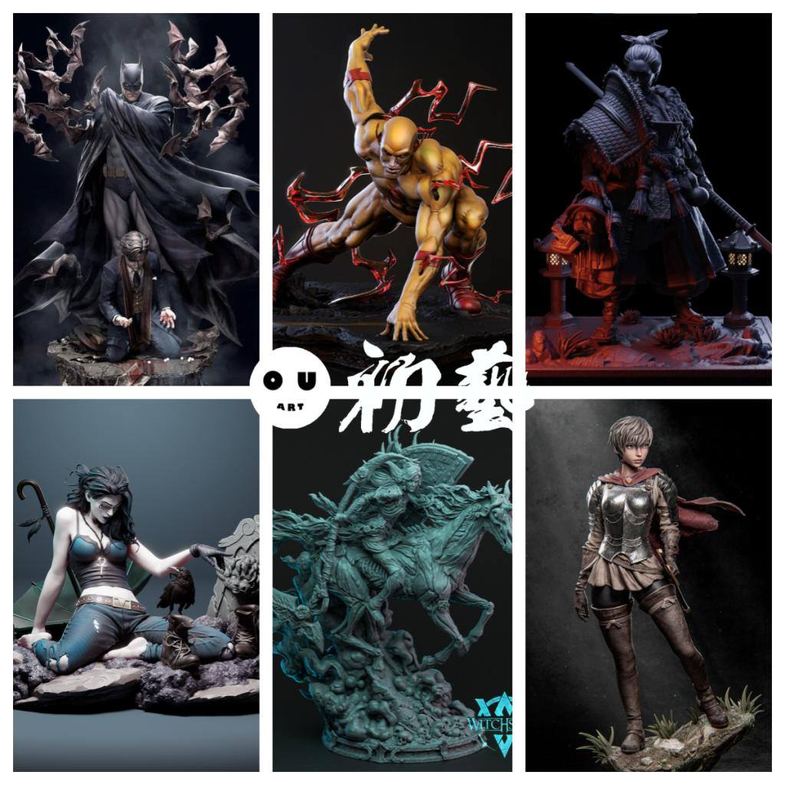
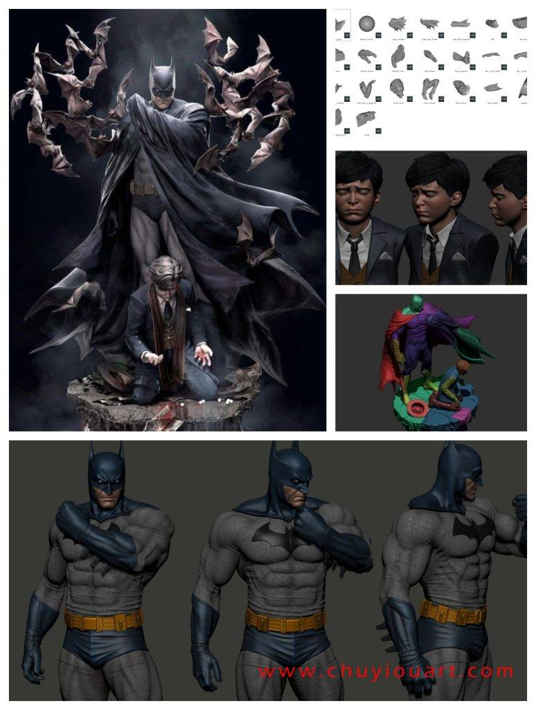
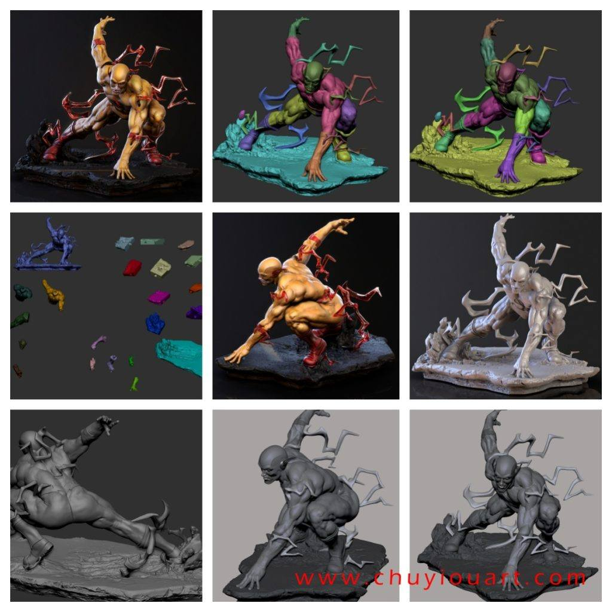
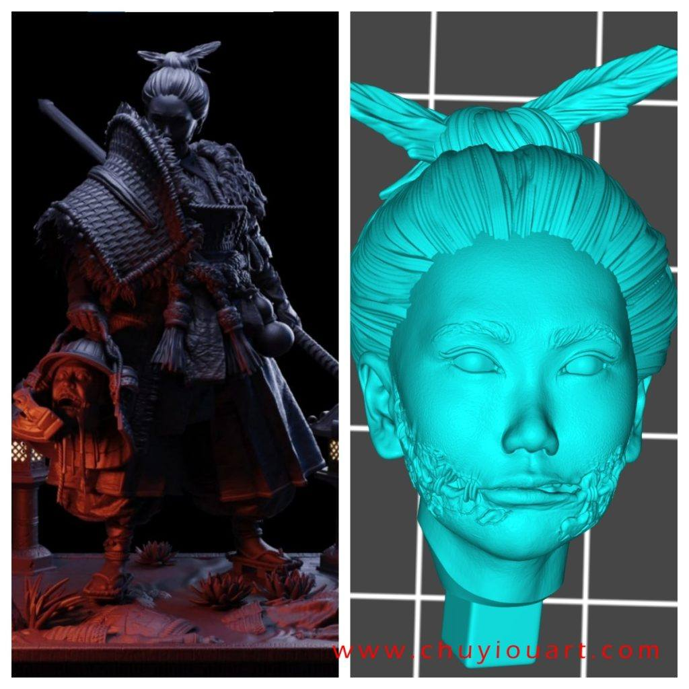
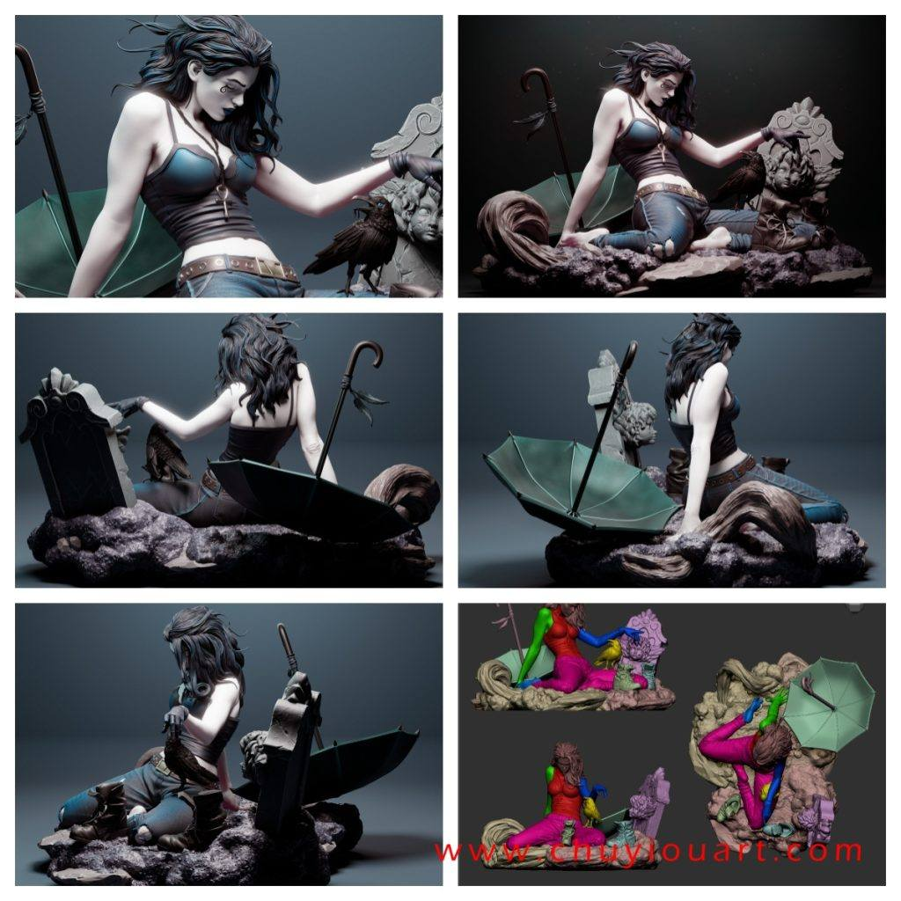
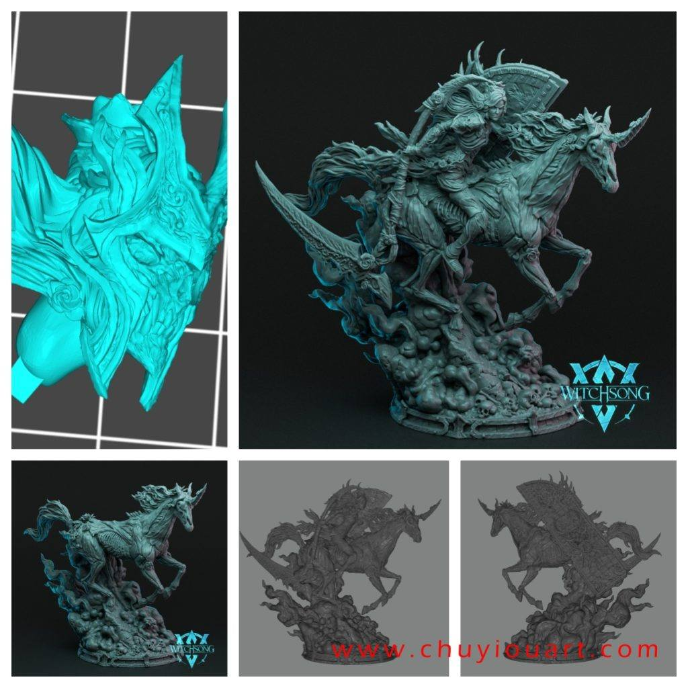
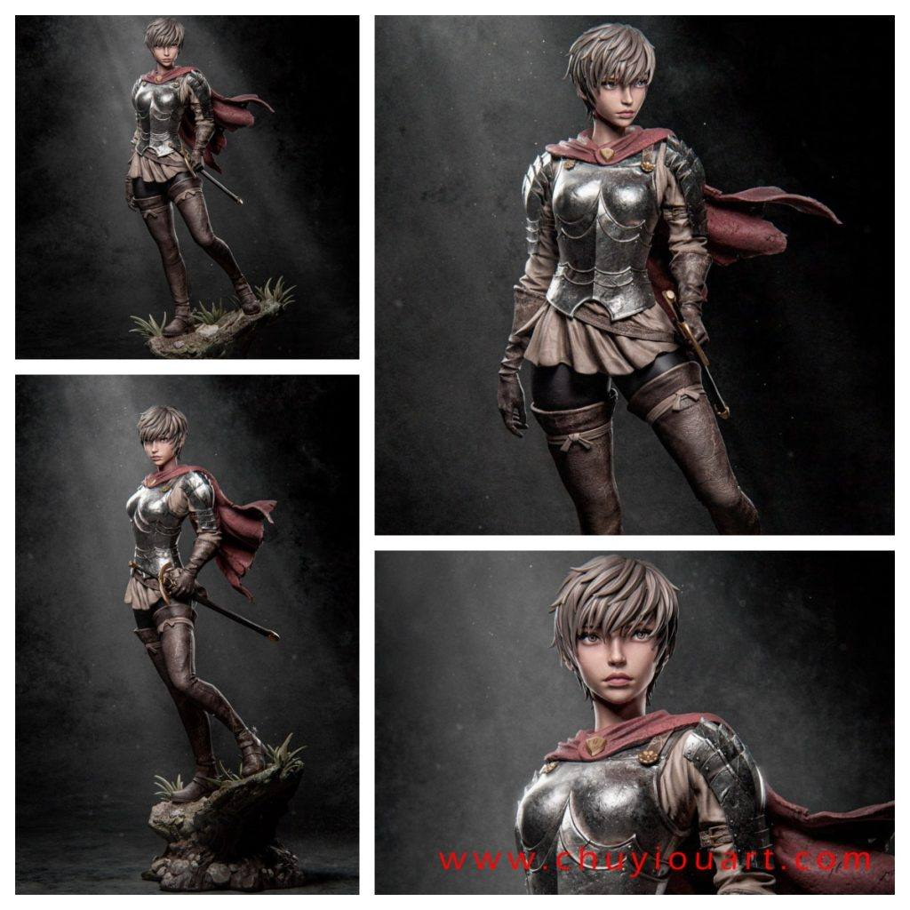

模型分享
12月08日STl图纸文件分享

1.蝙蝠侠，和小韦恩的场景，模型里貌似是没有蝙蝠的，模型本身素质不错。

2.闪电侠，好动态的高模，特效件不错。

3.裂口女武士，猩红的幽灵，高模分件很好，场景素材也不错。

4.DC死亡，场景人物动态都不错，素材很多可取之处。

5.珀尔塞福涅，死亡重生，非常帅的雕像。

6.卡思嘉，剑风传奇，很好看的高模简单场景。

链接:
https://pan.baidu.com/s/1YUwTFwDwbl57EiuVr6qO2Q 提取码: 7tdh
卡思嘉 剑风传奇
链接: https://pan.baidu.com/s/1nqzTm1hEwmaItj_JoQyDrg 提取码: fd2z
以上内容仅供个人使用（非商用）
ONLY for PERSONAL (NON-COMMERCIAL) use.
加群获得更多免费模型！

可加微信备注“模型资源”入群：chuyimeishu01